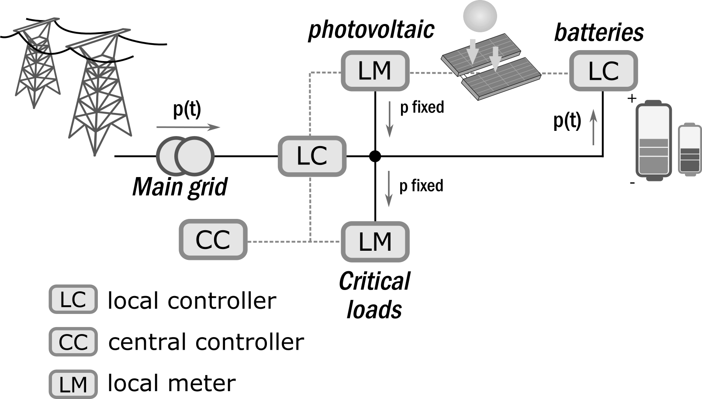

Exemple de gestion d’énergie et de dimensionnement d’un micro-réseau
L’exemple est basé sur la gestion d’énergie et le dimensionneùent d’un micro-réseau contenant, des sources d’énergie renouvelables, des charges, et un système de stockage électrochimique. Le profile d’irradiation et la consomation de la charge sont supposées connues sur l’horizon considéré et les degrés de libertés sont :
le dimensionnement du stockage (i.e. c_bat),
le dimensionnement des panneaux photovoltaïques (i.e. la surface),
les flux de puissances provenant du réseau et du stockage.

La première étape consiste à charger les bibliothèques utiles:
Pyomo : le package de modélisation des problèmes d’optimisation (voir https://pyomo.readthedocs.io/en/latest/)
lms2 : la librairie maison de modèles pour la gestion d’énerge et l’optimisation en génie électrique (documentation dans
lms2/docs/_build/html/index.html). Dans ce package on ira chercher les modèles que l’on souhaite utiliser, dans le cas qui nous intéresse battery_v2 (avec efficacité en charge et décharge), pv_panel, etc.
[1]:
from pyomo.dae import ContinuousSet, Integral
from pyomo.environ import *
from lms2.core.horizon import SimpleHorizon
from lms2.electric.batteries import battery_v2
from lms2.electric.sources import pv_panel, fixed_power_load, power_source
Cet exemple d’optimisation illustre les étapes suivantes :
Instanciation du problème d’optimisation et de l’horizon temporel
Discrétisation temporelle
Chargement des données
Résolution
Instanciation du problème d’optimisation et de l’horizon temporel
L’instanciation du problème comporte plusieurs étapes :
Instanciation d’un problème nommé
m.Instanciation de l’horizon temporel, celui-ci fait le lien entre les indexes des vecteurs (en s) et les dates (sous forme
str). Cet objet n’est pas toujours obligatoire, mais il est particulièrement utile pour le chargement de certaines données, la discrétisation temporelle et le post-processing (affichage, etc.).Instanciation des variables, des paramètres et des équations du modèle :
par chargement de sous-modèles (blocks) déjà existants dans la librairie,
par modélisation avec le langage pyomo.
[2]:
m = ConcreteModel()
horizon = SimpleHorizon(tstart='2020-01-01 00:00:00', tend='2020-01-02 00:00:00', time_step='10 min')
m.time = ContinuousSet(initialize=[0, horizon.horizon.total_seconds()])
print("les 5 premiers instants considérés :\n", horizon.current[0:5]) #
print("les 5 premiers indexes (équivalents au temps en s) : \n", horizon.index[0:5])
les 5 premiers instants considérés :
DatetimeIndex(['2020-01-01 00:00:00+01:00', '2020-01-01 00:10:00+01:00',
'2020-01-01 00:20:00+01:00', '2020-01-01 00:30:00+01:00',
'2020-01-01 00:40:00+01:00'],
dtype='datetime64[ns, Europe/Paris]', freq='10T')
les 5 premiers indexes (équivalents au temps en s) :
[ 0. 600. 1200. 1800. 2400.]
Les blocks sont des sous-problèmes qui permettent de définir, pour chaque composant, des variables, des paramètres, des contraintes et des expressions.
Il est possible de rentrer des options en argument. Les grandeurs dynamiques seront chargés plus tard, l’utilisation de dictionnaire n’est pas pratique dans ce cas, et le temps n’a pas encore été discrétisé…
[3]:
option_bat = {'time': m.time, 'c_bat': 2000, 'eta_c': 0.95, 'eta_d': 0.95, 'soc_min': 40, 'soc_max': 95}
option_charge = {'time': m.time}
option_pv = {'time': m.time, 's_max': 10, 's_min': 1}
option_res = {'time': m.time}
Les options des blocks sont (généralement) définis dans la documentation de chaque block,
[4]:
help(battery_v2)
Help on function battery_v2 in module lms2.electric.batteries:
battery_v2(bat, **options)
Bilinear battery Model.
This battery is limited in power, variation of power, state of charge and energy. One can fix initial and final
state of charge.
Efficiency for charge and discharge are considered.
It exposes one power port using source convention.
Instanciation options:
- c_bat : battery capacity (kWh)
- c_bat_max : battery maximal capacity, default : +inf (only if c_bat is None)
- c_bat_min : battery minimal capacity, default : 0 (only if c_bat is None)
- p_max : maximal charging power, default : +inf (>0)
- p_min : maximal descharging power, default : +inf (>0)
- soc_min : minimal soc, default : 0 (>0)
- soc_max : maximal soc, default : 100 (>0)
- soc0 : initial SOC, default: 50 (0<soc0<100)
- socf : final SOC, defalut: 50 (0<socf<100)
- eta_c : charging efficiency, default : 1 (<1 and >0)
- eta_d : descharging efficiency, default : 1 (<1 and >0)
=============== ===================================================================
Variables Documentation
=============== ===================================================================
p energy derivative with respect to time
e energy in battery
pd discharging power
pc charging power
u binary variable
=============== ===================================================================
=============== ===================================================================
Derivative Var Documentation
=============== ===================================================================
de variation of energy with respect to time
dp variation of the battery power with respect to time
=============== ===================================================================
=============== ===================================================================
Parameters Documentation
=============== ===================================================================
emin minimum energy (kWh)
emax maximal energy
socmin minimum soc
socmax maximal soc
soc0 initial state
socf final state
dpdmax maximal discharging power
dpcmax maximal charging power
pcmax maximal charging power
pdmax maximal discharging power
etac charging efficiency
etad discharging efficiency
=============== ===================================================================
=============== ===================================================================
Constraints Documentation
=============== ===================================================================
_soc_init Initial state of charge
_p_init Initialize power
_e_min Minimal energy constraint
_e_max Maximal energy constraint
_soc_final Final soc constraint
_soc_min Minimal state of charge constraint
_soc_max Maximal state of charge constraint
_dpdmax Maximal varation of descharging power constraint
_dpcmax Maximal varation of charging power constraint
_pdmax Discharging power bound
_pcmax Charging power bound
_p_balance Power balance constraint
_e_balance Energy balance constraint
=============== ===================================================================
=============== ===================================================================
Ports Documentation
=============== ===================================================================
outlet output power of the battery (kW), using source convention
=============== ===================================================================
=============== ===================================================================
Expressions Documentation
=============== ===================================================================
soc Expression of the state of charge
=============== ===================================================================
[5]:
m.bat = Block(rule=lambda x: battery_v2(x, **option_bat))
m.charge = Block(rule=lambda x: fixed_power_load(x, **option_charge))
m.pv = Block(rule=lambda x: pv_panel(x, **option_pv))
m.res = Block(rule=lambda x: power_source(x, **option_res))
A ce stade, les blocks sont instancié dans le problème m. Il est possible de vérifier la structure du modèle avec la commande pprint(). Notez que certaines grandeurs ne sont pas initialisées à la valeur que l’on souhaiterait, pour le moment.
[6]:
m.bat.pprint()
bat : Size=1, Index=None, Active=True
13 Param Declarations
dpcmax : maximal charging power
Size=1, Index=None, Domain=Reals, Default=10000000.0, Mutable=True
Key : Value
None : 10000000.0
dpdmax : maximal discharging power
Size=1, Index=None, Domain=Reals, Default=10000000.0, Mutable=True
Key : Value
None : 10000000.0
emax : maximal energy
Size=1, Index=None, Domain=Reals, Default=2000, Mutable=True
Key : Value
None : 2000
emin : minimum energy (kWh)
Size=1, Index=None, Domain=NonNegativeReals, Default=0, Mutable=True
Key : Value
None : 0
etac : charging efficiency
Size=1, Index=None, Domain=Reals, Default=0.95, Mutable=True
Key : Value
etad : discharging efficiency
Size=1, Index=None, Domain=Reals, Default=0.95, Mutable=True
Key : Value
pcmax : maximal charging power
Size=1, Index=None, Domain=NonNegativeReals, Default=10000000.0, Mutable=True
Key : Value
None : 10000000.0
pdmax : maximal discharging power
Size=1, Index=None, Domain=NonNegativeReals, Default=10000000.0, Mutable=True
Key : Value
None : 10000000.0
pinit : initial output power of the battery (default : None)
Size=1, Index=None, Domain=Any, Default=None, Mutable=True
Key : Value
None : None
soc0 : initial state
Size=1, Index=None, Domain=Any, Default=50, Mutable=True
Key : Value
None : 50
socf : final state
Size=1, Index=None, Domain=Any, Default=50, Mutable=True
Key : Value
None : 50
socmax : maximal soc
Size=1, Index=None, Domain=Any, Default=95, Mutable=True
Key : Value
None : 95
socmin : minimum soc
Size=1, Index=None, Domain=Reals, Default=40, Mutable=True
Key : Value
None : 40
5 Var Declarations
e : energy in battery
Size=2, Index=time
Key : Lower : Value : Upper : Fixed : Stale : Domain
0 : 0 : 1000.0 : 2000 : False : False : Reals
86400.0 : 0 : 1000.0 : 2000 : False : False : Reals
p : energy derivative with respect to time
Size=2, Index=time
Key : Lower : Value : Upper : Fixed : Stale : Domain
0 : None : 0 : None : False : False : Reals
86400.0 : None : 0 : None : False : False : Reals
pc : charging power
Size=2, Index=time
Key : Lower : Value : Upper : Fixed : Stale : Domain
0 : 0 : 0 : None : False : False : NonNegativeReals
86400.0 : 0 : 0 : None : False : False : NonNegativeReals
pd : discharging power
Size=2, Index=time
Key : Lower : Value : Upper : Fixed : Stale : Domain
0 : 0 : 0 : None : False : False : NonNegativeReals
86400.0 : 0 : 0 : None : False : False : NonNegativeReals
u : binary variable
Size=2, Index=time
Key : Lower : Value : Upper : Fixed : Stale : Domain
0 : 0 : 0 : 1 : False : False : Binary
86400.0 : 0 : 0 : 1 : False : False : Binary
1 Expression Declarations
soc : Expression of the state of charge
Size=2, Index=time
Key : Expression
0 : 100*bat.e[0]/bat.emax
86400.0 : 100*bat.e[86400.0]/bat.emax
13 Constraint Declarations
_dpcmax : Maximal variation of charging power constraint
Size=2, Index=time, Active=True
Key : Lower : Body : Upper : Active
0 : - bat.dpcmax : bat.dp[0] : +Inf : True
86400.0 : - bat.dpcmax : bat.dp[86400.0] : +Inf : True
_dpdmax : Maximal variation of descharging power constraint
Size=2, Index=time, Active=True
Key : Lower : Body : Upper : Active
0 : -Inf : bat.dp[0] : bat.dpdmax : True
86400.0 : -Inf : bat.dp[86400.0] : bat.dpdmax : True
_e_balance : Energy balance constraint
Size=2, Index=time, Active=True
Key : Lower : Body : Upper : Active
0 : 0.0 : bat.de[0] - 0.0002777777777777778*(bat.etac*bat.pc[0] - 1/bat.etad*bat.pd[0]) : 0.0 : True
86400.0 : 0.0 : bat.de[86400.0] - 0.0002777777777777778*(bat.etac*bat.pc[86400.0] - 1/bat.etad*bat.pd[86400.0]) : 0.0 : True
_e_max : Maximal energy constraint
Size=2, Index=time, Active=True
Key : Lower : Body : Upper : Active
0 : -Inf : bat.e[0] : bat.emax : True
86400.0 : -Inf : bat.e[86400.0] : bat.emax : True
_e_min : Minimal energy constraint
Size=2, Index=time, Active=True
Key : Lower : Body : Upper : Active
0 : bat.emin : bat.e[0] : +Inf : True
86400.0 : bat.emin : bat.e[86400.0] : +Inf : True
_p_balance : Power balance constraint
Size=2, Index=time, Active=True
Key : Lower : Body : Upper : Active
0 : 0.0 : bat.p[0] - bat.pd[0] + bat.pc[0] : 0.0 : True
86400.0 : 0.0 : bat.p[86400.0] - bat.pd[86400.0] + bat.pc[86400.0] : 0.0 : True
_p_init : Initialize power
Size=0, Index=time, Active=True
Key : Lower : Body : Upper : Active
_pcmax : Charging power bound
Size=2, Index=time, Active=True
Key : Lower : Body : Upper : Active
0 : -Inf : bat.pc[0] + bat.pcmax*bat.u[0] : bat.pcmax : True
86400.0 : -Inf : bat.pc[86400.0] + bat.pcmax*bat.u[86400.0] : bat.pcmax : True
_pdmax : Discharging power bound
Size=2, Index=time, Active=True
Key : Lower : Body : Upper : Active
0 : -Inf : bat.pd[0] - bat.pdmax*bat.u[0] : 0.0 : True
86400.0 : -Inf : bat.pd[86400.0] - bat.pdmax*bat.u[86400.0] : 0.0 : True
_soc_final : Final soc constraint
Size=1, Index=time, Active=True
Key : Lower : Body : Upper : Active
86400.0 : bat.socf*bat.emax/100 : bat.e[86400.0] : bat.socf*bat.emax/100 : True
_soc_init : initial state of charge
Size=1, Index=time, Active=True
Key : Lower : Body : Upper : Active
0 : bat.soc0*bat.emax/100 : bat.e[0] : bat.soc0*bat.emax/100 : True
_soc_max : Maximal state of charge constraint
Size=2, Index=time, Active=True
Key : Lower : Body : Upper : Active
0 : -Inf : bat.e[0] : bat.emax*bat.socmax/100 : True
86400.0 : -Inf : bat.e[86400.0] : bat.emax*bat.socmax/100 : True
_soc_min : Minimal state of charge constraint
Size=2, Index=time, Active=True
Key : Lower : Body : Upper : Active
0 : bat.socmin*bat.emax/100 : bat.e[0] : +Inf : True
86400.0 : bat.socmin*bat.emax/100 : bat.e[86400.0] : +Inf : True
2 DerivativeVar Declarations
de : variation of energy with respect to time
Size=2, Index=time
Key : Lower : Value : Upper : Fixed : Stale : Domain
0 : None : 0 : None : False : False : Reals
86400.0 : None : 0 : None : False : False : Reals
dp : variation of the battery power with respect to time
Size=2, Index=time
Key : Lower : Value : Upper : Fixed : Stale : Domain
0 : -10000000.0 : 0 : 10000000.0 : False : False : Reals
86400.0 : -10000000.0 : 0 : 10000000.0 : False : False : Reals
1 Port Declarations
outlet : output power of the battery (kW), using source convention
Size=1, Index=None
Key : Name : Size : Variable
None : f : 2 : bat.p
35 Declarations: emax emin socmin pinit socmax soc0 socf dpdmax dpcmax pcmax pdmax p e de dp outlet _soc_init _p_init _e_min _e_max _soc_final _soc_min _soc_max _dpdmax _dpcmax soc pd pc u etac etad _e_balance _pdmax _pcmax _p_balance
Exemple de contrainte sur le bilan de puissance
La connexion électrique des blocks entre eux peut être vue comme une contrainte d’égalité, appelée bilan de puissance. Elle doit être définie en dehors des blocks, (i.e. au niveau du model m). Pour se faire il y a deux possibilités : - définir une contrainte classique avec le langague de pyomo, - utiliser la notion de ports (extensifs ou intensifs) (usage un peu plus avancé).
[7]:
@m.Constraint(m.time)
def bilan_puissance(b, t):
return b.bat.p[t] + b.res.p[t] + b.pv.p[t] == b.charge.p[t]
Exemple d’une expression
Il est possible de définir des expressions, qui interviendront potentiellement dans les calculs des coûts, des contraintes ou pour le post-processing. Pour l’exemple, définissons les couts instantanés économiques cout_inst_edf et écologiques cout_inst_env.
[8]:
@m.Expression(m.time)
def cout_inst_env(b, t):
return 60*b.bat.p[t] + 60*b.pv.p[t] + 700*b.res.p[t]
@m.Expression(m.time)
def cout_inst_edf(b, t):
return 0.15*b.res.p[t]
Exemple d’intégration temporelle
Lorsqu’une expression doit être intégrée sur le temps continu, on utilise l’objet Integral. L’intégration des couts sur le temps devient :
[9]:
m.int_edf = Integral(m.time, wrt=m.time, rule=cout_inst_edf)
m.int_env = Integral(m.time, wrt=m.time, rule=cout_inst_env)
Exemple de définition de l’objectif
L’objectif d’optimisation doit être défini au niveau du model m et peut faire intervenir les variables des sous-blocks. Dans le language Pyomo, on utilise l’objet Objective.
[10]:
@m.Objective()
def cout_edf(b):
return b.int_edf + 100*b.bat.emax/(m.time.last() - m.time.first())/(20*365*24*60) + 100*b.pv.s_pv/(m.time.last() - m.time.first())/(20*365*24*60)
Discrétisation temporelle
La discrétisation temporelle est souvent source d’erreur, suivant le schéma d’intégration et sur des modèles de grande taille, cette étape devient difficilement réalisable à la main. Pour cela, l’extention Pyomo.dae offre la possibilité de discrétiser automatiquement les modèles dans lesquels apparait un index continu (généralement le temps). Ce qui rend les choses plus simples. Dans cet exemple on choisira un schéma d’intégration de différence finie (i.e. celui d’Euler).
Avant discrétisation, les grandeurs indexées par le temps ne font intervenir que le début et la fin de l’horizon.
[11]:
# l'intégrale avant discrétisation :
m.int_edf.pprint()
int_edf : Size=1, Index=None
Key : Expression
None : 43200.0*(0.15*res.p[86400.0] + 0.15*res.p[0])
Noter que la discrétisation se fait sur le modèle complet, en renseignant le nombre d’éléments finis. Dans notre cas, cette information est stockée dans l’objet horizon.
[12]:
from pyomo.environ import TransformationFactory
TransformationFactory('dae.finite_difference').apply_to(m, nfe=horizon.nfe)
[13]:
# l'intégrale après discrétisation :
m.int_edf.pprint()
int_edf : Size=1, Index=None
Key : Expression
None : 300.0*(0.15*res.p[600.0] + 0.15*res.p[0]) + 300.0*(0.15*res.p[1200.0] + 0.15*res.p[600.0]) + 300.0*(0.15*res.p[1800.0] + 0.15*res.p[1200.0]) + 300.0*(0.15*res.p[2400.0] + 0.15*res.p[1800.0]) + 300.0*(0.15*res.p[3000.0] + 0.15*res.p[2400.0]) + 300.0*(0.15*res.p[3600.0] + 0.15*res.p[3000.0]) + 300.0*(0.15*res.p[4200.0] + 0.15*res.p[3600.0]) + 300.0*(0.15*res.p[4800.0] + 0.15*res.p[4200.0]) + 300.0*(0.15*res.p[5400.0] + 0.15*res.p[4800.0]) + 300.0*(0.15*res.p[6000.0] + 0.15*res.p[5400.0]) + 300.0*(0.15*res.p[6600.0] + 0.15*res.p[6000.0]) + 300.0*(0.15*res.p[7200.0] + 0.15*res.p[6600.0]) + 300.0*(0.15*res.p[7800.0] + 0.15*res.p[7200.0]) + 300.0*(0.15*res.p[8400.0] + 0.15*res.p[7800.0]) + 300.0*(0.15*res.p[9000.0] + 0.15*res.p[8400.0]) + 300.0*(0.15*res.p[9600.0] + 0.15*res.p[9000.0]) + 300.0*(0.15*res.p[10200.0] + 0.15*res.p[9600.0]) + 300.0*(0.15*res.p[10800.0] + 0.15*res.p[10200.0]) + 300.0*(0.15*res.p[11400.0] + 0.15*res.p[10800.0]) + 300.0*(0.15*res.p[12000.0] + 0.15*res.p[11400.0]) + 300.0*(0.15*res.p[12600.0] + 0.15*res.p[12000.0]) + 300.0*(0.15*res.p[13200.0] + 0.15*res.p[12600.0]) + 300.0*(0.15*res.p[13800.0] + 0.15*res.p[13200.0]) + 300.0*(0.15*res.p[14400.0] + 0.15*res.p[13800.0]) + 300.0*(0.15*res.p[15000.0] + 0.15*res.p[14400.0]) + 300.0*(0.15*res.p[15600.0] + 0.15*res.p[15000.0]) + 300.0*(0.15*res.p[16200.0] + 0.15*res.p[15600.0]) + 300.0*(0.15*res.p[16800.0] + 0.15*res.p[16200.0]) + 300.0*(0.15*res.p[17400.0] + 0.15*res.p[16800.0]) + 300.0*(0.15*res.p[18000.0] + 0.15*res.p[17400.0]) + 300.0*(0.15*res.p[18600.0] + 0.15*res.p[18000.0]) + 300.0*(0.15*res.p[19200.0] + 0.15*res.p[18600.0]) + 300.0*(0.15*res.p[19800.0] + 0.15*res.p[19200.0]) + 300.0*(0.15*res.p[20400.0] + 0.15*res.p[19800.0]) + 300.0*(0.15*res.p[21000.0] + 0.15*res.p[20400.0]) + 300.0*(0.15*res.p[21600.0] + 0.15*res.p[21000.0]) + 300.0*(0.15*res.p[22200.0] + 0.15*res.p[21600.0]) + 300.0*(0.15*res.p[22800.0] + 0.15*res.p[22200.0]) + 300.0*(0.15*res.p[23400.0] + 0.15*res.p[22800.0]) + 300.0*(0.15*res.p[24000.0] + 0.15*res.p[23400.0]) + 300.0*(0.15*res.p[24600.0] + 0.15*res.p[24000.0]) + 300.0*(0.15*res.p[25200.0] + 0.15*res.p[24600.0]) + 300.0*(0.15*res.p[25800.0] + 0.15*res.p[25200.0]) + 300.0*(0.15*res.p[26400.0] + 0.15*res.p[25800.0]) + 300.0*(0.15*res.p[27000.0] + 0.15*res.p[26400.0]) + 300.0*(0.15*res.p[27600.0] + 0.15*res.p[27000.0]) + 300.0*(0.15*res.p[28200.0] + 0.15*res.p[27600.0]) + 300.0*(0.15*res.p[28800.0] + 0.15*res.p[28200.0]) + 300.0*(0.15*res.p[29400.0] + 0.15*res.p[28800.0]) + 300.0*(0.15*res.p[30000.0] + 0.15*res.p[29400.0]) + 300.0*(0.15*res.p[30600.0] + 0.15*res.p[30000.0]) + 300.0*(0.15*res.p[31200.0] + 0.15*res.p[30600.0]) + 300.0*(0.15*res.p[31800.0] + 0.15*res.p[31200.0]) + 300.0*(0.15*res.p[32400.0] + 0.15*res.p[31800.0]) + 300.0*(0.15*res.p[33000.0] + 0.15*res.p[32400.0]) + 300.0*(0.15*res.p[33600.0] + 0.15*res.p[33000.0]) + 300.0*(0.15*res.p[34200.0] + 0.15*res.p[33600.0]) + 300.0*(0.15*res.p[34800.0] + 0.15*res.p[34200.0]) + 300.0*(0.15*res.p[35400.0] + 0.15*res.p[34800.0]) + 300.0*(0.15*res.p[36000.0] + 0.15*res.p[35400.0]) + 300.0*(0.15*res.p[36600.0] + 0.15*res.p[36000.0]) + 300.0*(0.15*res.p[37200.0] + 0.15*res.p[36600.0]) + 300.0*(0.15*res.p[37800.0] + 0.15*res.p[37200.0]) + 300.0*(0.15*res.p[38400.0] + 0.15*res.p[37800.0]) + 300.0*(0.15*res.p[39000.0] + 0.15*res.p[38400.0]) + 300.0*(0.15*res.p[39600.0] + 0.15*res.p[39000.0]) + 300.0*(0.15*res.p[40200.0] + 0.15*res.p[39600.0]) + 300.0*(0.15*res.p[40800.0] + 0.15*res.p[40200.0]) + 300.0*(0.15*res.p[41400.0] + 0.15*res.p[40800.0]) + 300.0*(0.15*res.p[42000.0] + 0.15*res.p[41400.0]) + 300.0*(0.15*res.p[42600.0] + 0.15*res.p[42000.0]) + 300.0*(0.15*res.p[43200.0] + 0.15*res.p[42600.0]) + 300.0*(0.15*res.p[43800.0] + 0.15*res.p[43200.0]) + 300.0*(0.15*res.p[44400.0] + 0.15*res.p[43800.0]) + 300.0*(0.15*res.p[45000.0] + 0.15*res.p[44400.0]) + 300.0*(0.15*res.p[45600.0] + 0.15*res.p[45000.0]) + 300.0*(0.15*res.p[46200.0] + 0.15*res.p[45600.0]) + 300.0*(0.15*res.p[46800.0] + 0.15*res.p[46200.0]) + 300.0*(0.15*res.p[47400.0] + 0.15*res.p[46800.0]) + 300.0*(0.15*res.p[48000.0] + 0.15*res.p[47400.0]) + 300.0*(0.15*res.p[48600.0] + 0.15*res.p[48000.0]) + 300.0*(0.15*res.p[49200.0] + 0.15*res.p[48600.0]) + 300.0*(0.15*res.p[49800.0] + 0.15*res.p[49200.0]) + 300.0*(0.15*res.p[50400.0] + 0.15*res.p[49800.0]) + 300.0*(0.15*res.p[51000.0] + 0.15*res.p[50400.0]) + 300.0*(0.15*res.p[51600.0] + 0.15*res.p[51000.0]) + 300.0*(0.15*res.p[52200.0] + 0.15*res.p[51600.0]) + 300.0*(0.15*res.p[52800.0] + 0.15*res.p[52200.0]) + 300.0*(0.15*res.p[53400.0] + 0.15*res.p[52800.0]) + 300.0*(0.15*res.p[54000.0] + 0.15*res.p[53400.0]) + 300.0*(0.15*res.p[54600.0] + 0.15*res.p[54000.0]) + 300.0*(0.15*res.p[55200.0] + 0.15*res.p[54600.0]) + 300.0*(0.15*res.p[55800.0] + 0.15*res.p[55200.0]) + 300.0*(0.15*res.p[56400.0] + 0.15*res.p[55800.0]) + 300.0*(0.15*res.p[57000.0] + 0.15*res.p[56400.0]) + 300.0*(0.15*res.p[57600.0] + 0.15*res.p[57000.0]) + 300.0*(0.15*res.p[58200.0] + 0.15*res.p[57600.0]) + 300.0*(0.15*res.p[58800.0] + 0.15*res.p[58200.0]) + 300.0*(0.15*res.p[59400.0] + 0.15*res.p[58800.0]) + 300.0*(0.15*res.p[60000.0] + 0.15*res.p[59400.0]) + 300.0*(0.15*res.p[60600.0] + 0.15*res.p[60000.0]) + 300.0*(0.15*res.p[61200.0] + 0.15*res.p[60600.0]) + 300.0*(0.15*res.p[61800.0] + 0.15*res.p[61200.0]) + 300.0*(0.15*res.p[62400.0] + 0.15*res.p[61800.0]) + 300.0*(0.15*res.p[63000.0] + 0.15*res.p[62400.0]) + 300.0*(0.15*res.p[63600.0] + 0.15*res.p[63000.0]) + 300.0*(0.15*res.p[64200.0] + 0.15*res.p[63600.0]) + 300.0*(0.15*res.p[64800.0] + 0.15*res.p[64200.0]) + 300.0*(0.15*res.p[65400.0] + 0.15*res.p[64800.0]) + 300.0*(0.15*res.p[66000.0] + 0.15*res.p[65400.0]) + 300.0*(0.15*res.p[66600.0] + 0.15*res.p[66000.0]) + 300.0*(0.15*res.p[67200.0] + 0.15*res.p[66600.0]) + 300.0*(0.15*res.p[67800.0] + 0.15*res.p[67200.0]) + 300.0*(0.15*res.p[68400.0] + 0.15*res.p[67800.0]) + 300.0*(0.15*res.p[69000.0] + 0.15*res.p[68400.0]) + 300.0*(0.15*res.p[69600.0] + 0.15*res.p[69000.0]) + 300.0*(0.15*res.p[70200.0] + 0.15*res.p[69600.0]) + 300.0*(0.15*res.p[70800.0] + 0.15*res.p[70200.0]) + 300.0*(0.15*res.p[71400.0] + 0.15*res.p[70800.0]) + 300.0*(0.15*res.p[72000.0] + 0.15*res.p[71400.0]) + 300.0*(0.15*res.p[72600.0] + 0.15*res.p[72000.0]) + 300.0*(0.15*res.p[73200.0] + 0.15*res.p[72600.0]) + 300.0*(0.15*res.p[73800.0] + 0.15*res.p[73200.0]) + 300.0*(0.15*res.p[74400.0] + 0.15*res.p[73800.0]) + 300.0*(0.15*res.p[75000.0] + 0.15*res.p[74400.0]) + 300.0*(0.15*res.p[75600.0] + 0.15*res.p[75000.0]) + 300.0*(0.15*res.p[76200.0] + 0.15*res.p[75600.0]) + 300.0*(0.15*res.p[76800.0] + 0.15*res.p[76200.0]) + 300.0*(0.15*res.p[77400.0] + 0.15*res.p[76800.0]) + 300.0*(0.15*res.p[78000.0] + 0.15*res.p[77400.0]) + 300.0*(0.15*res.p[78600.0] + 0.15*res.p[78000.0]) + 300.0*(0.15*res.p[79200.0] + 0.15*res.p[78600.0]) + 300.0*(0.15*res.p[79800.0] + 0.15*res.p[79200.0]) + 300.0*(0.15*res.p[80400.0] + 0.15*res.p[79800.0]) + 300.0*(0.15*res.p[81000.0] + 0.15*res.p[80400.0]) + 300.0*(0.15*res.p[81600.0] + 0.15*res.p[81000.0]) + 300.0*(0.15*res.p[82200.0] + 0.15*res.p[81600.0]) + 300.0*(0.15*res.p[82800.0] + 0.15*res.p[82200.0]) + 300.0*(0.15*res.p[83400.0] + 0.15*res.p[82800.0]) + 300.0*(0.15*res.p[84000.0] + 0.15*res.p[83400.0]) + 300.0*(0.15*res.p[84600.0] + 0.15*res.p[84000.0]) + 300.0*(0.15*res.p[85200.0] + 0.15*res.p[84600.0]) + 300.0*(0.15*res.p[85800.0] + 0.15*res.p[85200.0]) + 300.0*(0.15*res.p[86400.0] + 0.15*res.p[85800.0])
Chargement des données
En optimisation, il est d’usage de séparer la formulation des données, pour une meilleure lecture et pour réutiliser simplement les modèles.
La lecture et le chargement des données peuvent-être réalisées par différentes méthodes selon les formats des données. Dans lms2, nous proposons une forme générique de lire, interpoler et charger les données en utilisant les fonctions lms2.tools.read_data et lms2.load_data. Se référer aux documentations pour plus d’information.
La fonction read_data gère plusieurs formats de données, ou plutôt, pluseurs formats d’index.
Index entier
Si les données sont indexées par une colonne en seconde. L’unité utilisée peut-être renseignée (par défaut ‘s’), la zone peut-être renseignée (défaut : Europe/Paris), et la date de début des données doit être renseignée. Cet index est ensuite automatiquement transformé en date.
[14]:
from lms2.tools.data_processing import read_data, load_data
import os
data_charge = read_data(horizon, os.path.join(os.getcwd(), 'data', 'base_loads.csv'),
usecols=[0, 1, 2, 3],
unit='s',
tz_data= 'Europe/Paris',
start_date='2020-01-01 00:00:00')
data_charge.head(5)
[14]:
| base_load1 | base_load2 | base_load3 | time (s) | |
|---|---|---|---|---|
| 2020-01-01 00:00:00+01:00 | 191.699997 | 29.0 | 319.552185 | 0 |
| 2020-01-01 00:10:00+01:00 | 191.699997 | 29.0 | 288.000000 | 600 |
| 2020-01-01 00:20:00+01:00 | 191.699997 | 29.0 | 443.000000 | 1200 |
| 2020-01-01 00:30:00+01:00 | 191.699997 | 29.0 | 443.000000 | 1800 |
| 2020-01-01 00:40:00+01:00 | 191.699997 | 153.0 | 215.399994 | 2400 |
[15]:
import matplotlib.pyplot as plt
data_charge[['base_load1', 'base_load2', 'base_load3']].plot(figsize=(10, 3),
title='Trois profils de puissance de la charge (kW)')
plt.grid('on')
Index en chaîne de caractères
Si les données sont indexées par une chaine de caractère dont le format est celui d’une date. Dans ce cas, la date de début et l’unité ne sont pas utiles. La colonne d’index est parsée, utilisant le format définit dans date_parser.
[16]:
data_pv = read_data(horizon, os.path.join(os.getcwd(), 'data', 'pv_2020.csv'),
usecols=[0, 2],
date_parser="%d/%m/%Y %H:%M")
data_pv.head(5)
[16]:
| p_PV | |
|---|---|
| 2020-01-01 00:00:00+01:00 | 0.0 |
| 2020-01-01 00:10:00+01:00 | 0.0 |
| 2020-01-01 00:20:00+01:00 | 0.0 |
| 2020-01-01 00:30:00+01:00 | 0.0 |
| 2020-01-01 00:40:00+01:00 | 0.0 |
[17]:
data_pv.plot(title='Profil de puissance des PV', figsize=(10, 3))
plt.grid('on')
[23]:
load_data(horizon, m.pv.p0, data_pv['p_PV'])
load_data(horizon, m.charge.p, data_charge['base_load1'])
data index and variable index does not have the same name. This could be a source of error...
data index and variable index does not have the same name. This could be a source of error...
[25]:
type(m.pv.p0)
[25]:
pyomo.core.base.param.IndexedParam
[26]:
# solver
#sol = SolverFactory('gurobi', solver_io="direct")
sol = SolverFactory('glpk')
res = sol.solve(m)
[27]:
# post-processing
import matplotlib.pyplot as plt
from lms2.tools.post_processing import *
fig, ax = plt.subplots(nrows=2, ncols=2, sharex='all', figsize=(15, 6))
pplot(m.bat.p, m.pv.p, m.charge.p, m.res.p,
ax=ax[0][0],
title='Bilan de Puissance',
fig=fig,
index=horizon.current,
bbox_to_anchor = (0, -0.12, 1, 0.2))
pplot(m.pv.p, m.pv.p0, ax=ax[1][0], title='Puissance PV', fig=fig, index=horizon.current, bbox_to_anchor = (0, -0.2, 1, 0.2))
pplot(m.bat.e, ax=ax[0][1], title='Etat de charge Batterie', fig=fig, index=horizon.current, bbox_to_anchor = (0, -0.12, 1, 0.2))
pplot(m.cout_inst_edf, ax=ax[1][1], title='Cout EDF instantané', fig=fig, index=horizon.current, bbox_to_anchor = (0, -0.2, 1, 0.2))
plt.show()